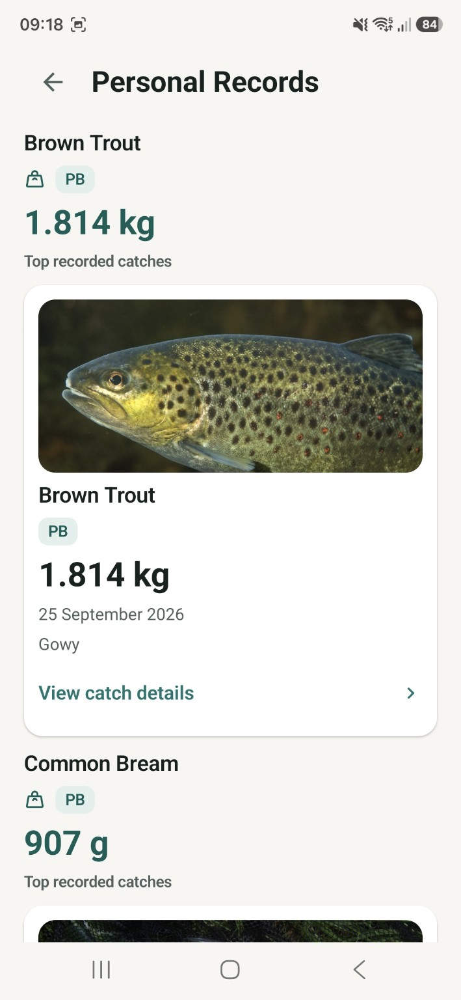

Start without an account
Download CatchID on Android and begin your journal. The app is free to download and includes advertising.
THE CATCHID FISHING JOURNAL APP
A fishing journal app for the catches you want to remember. Log manually, add a photo if you have one, and keep your fishing history together.Log catches, with or without a photo. Keep your fishing history together.
Free on Android · No account needed to start
Preview only · opens no storeCatch by catch.
Day by day.
FROM THE WATER TO YOUR JOURNAL
Choose “Add without a photo” to record manually. You don’t need fish identification.
Save species, date, time, location, weight and fishing details where available.
Find your saved catches in one journal, with the photographs and details you recorded.
Your catch still belongs in your journal. A photograph is optional.
DISCOVER CATCH INSIGHTS
Look back at personal records, your most recorded species and the places in your fishing history.
Based on your recorded catches. Views develop as your journal grows; some need enough data.
What can Insights tell me?

Your catches tell a story. They don’t measure catch rates or fishing effort.
A LITTLE HELP, IF YOU NEED IT
A photo can give you a likely species suggestion. Check it, change it if needed, then save the catch.
Or simply record it yourself. Identification is always optional.
A suggestion, never a guarantee.SIMPLE, FROM THE START
Download CatchID on Android and begin your journal. The app is free to download and includes advertising.
Optional Google sign-in can protect your journal. Once protection is up to date, restore protected records and backed-up photos using the same Google account.
A FEW THINGS TO KNOW
A little clarity before you begin.
Yes. Choose “Add without a photo” and enter the catch yourself. Fish identification is optional.
No account is needed to start recording catches. Optional Journal Protection uses Google sign-in.
Explore personal records, fishing locations and patterns based on your recorded catches. Some views need enough saved data. They do not measure fishing effort or catch rates.
Yes. Photo identification suggests a likely species and can be uncertain. Check the result and change the species if needed.
CatchID is free to download on Android. The app includes advertising.
YOUR NEXT CATCH IS A BEGINNING
Free on Android · No account needed to start
Preview only · opens no store